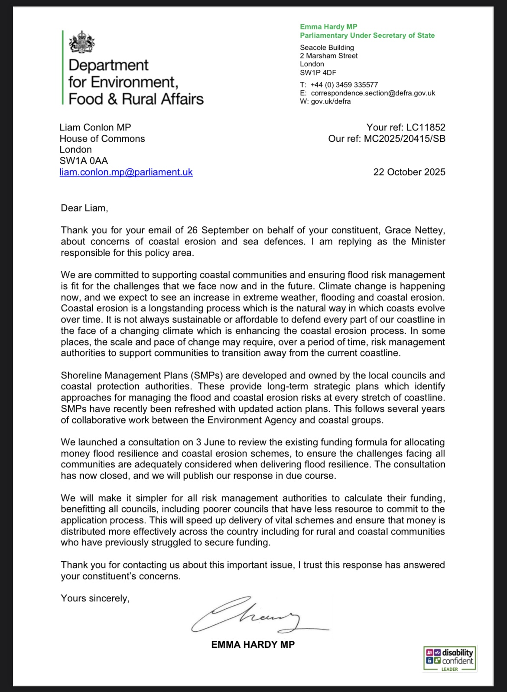
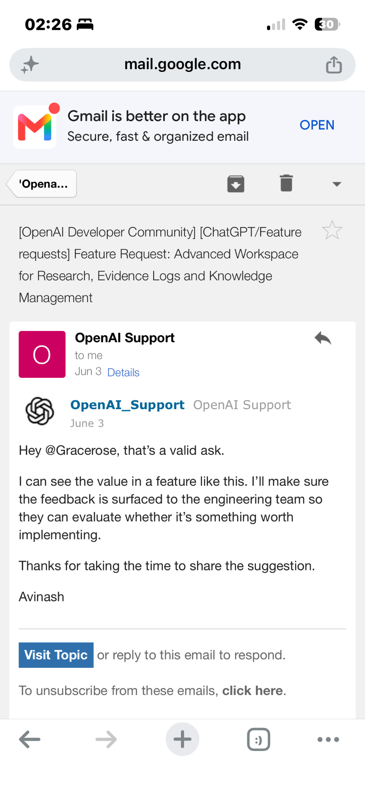
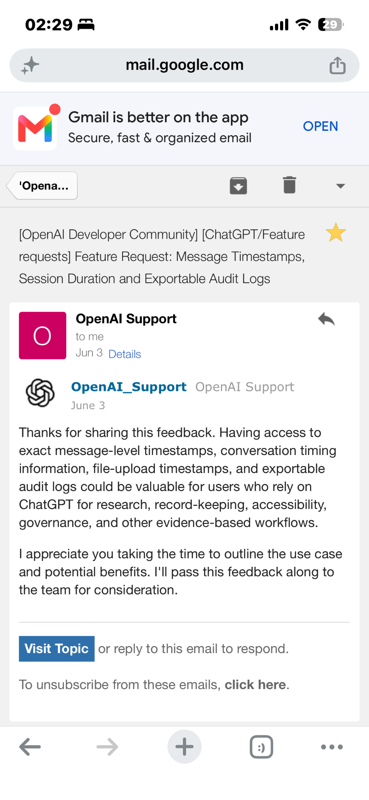
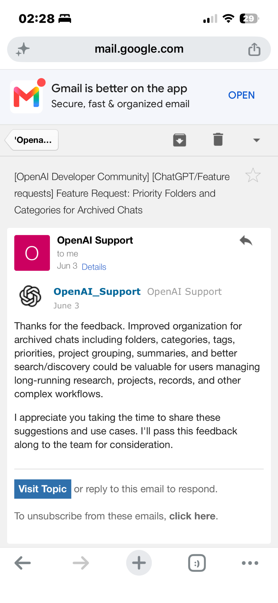
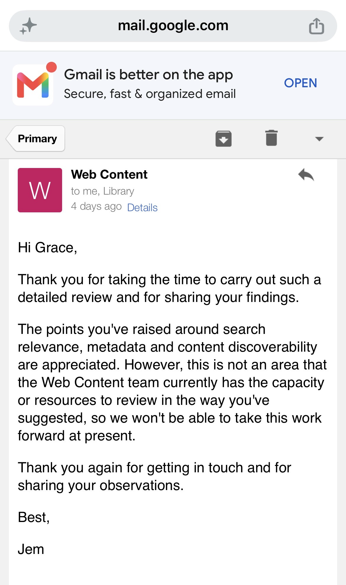

Recognition & Acknowledgements
A record of contribution, recognition, advocacy and service that conventional job titles do not always capture: endorsements, institutional thanks, mentoring, civic work, research labour, technical problem-solving and the documented trail of work undertaken behind the scenes.
Much has already been witnessed, learned, accomplished and experienced, but this is not a concluding record. God willing, I may have five or more decades ahead to learn, create, contribute and accomplish much more.
Grace Rosemary Nettey’s Recognition & Acknowledgements record is publicly available on this page. The related Independent Work & Impact record documents my dated research, projects, writing and representations. Entries link to public sources or describe the supporting material, distinguishing a contribution, an acknowledgement and a documented outcome.
AI-company feedback and independent idea development
My independently developed AI product and governance proposals have received acknowledgement and encouraging feedback through company support and community channels. The OpenAI support record below preserves dated examples, including 13 May 2026 feedback on transparency and portfolio synchronisation, 3 June research-workspace and audit-log responses, and an October source-permissions response. This is meaningful recognition of the effort, clarity and potential usefulness of the suggestions, without treating support acknowledgement as proof of product adoption or formal endorsement.
I also report positive interactions with Mistral and other AI companies or communities. A public Mistral Vibe discussion is linked in the feature record; specific appreciative responses from Mistral and other providers are not quoted here until their exact wording, date, sender and response status can be checked. The acknowledgement history should distinguish a personal response, automated receipt, community comment, substantive evaluation, engineering decision and implementation.
Research credit matters independently of external acceptance. The dated feature and contribution register and novelty research distinguish my initial proposal, earlier related work, independently documented development, collaboration, prior art, verification and any later outcomes.
Encouraging replies, substantive consideration and official follow-up
This selection draws on correspondence retained privately. It distinguishes personalised or AI-assisted comments, institutional acknowledgements, referrals and confirmed action. It records a response to my contribution without suggesting that an organisation has endorsed all my conclusions or implemented a proposed feature.
- Mistral AI · 1 November 2026: Its disclosed AI support agent described my proposed consent-based evidence verification architecture as extending existing connector capabilities into governance, provenance and interoperable registries, and called that extension thoughtful. 2 November: an AI-agent response appreciated the architecture and research reasoning, stated that feedback would be logged for team review, and distinguished Mistral's existing tools from a cross-provider verification network. This confirms the content of the AI-assisted response, not a human engineering assessment or completed review. Related proposal.
- OpenAI Support · May–November 2026: existing dated support acknowledgements are detailed below. On 1 November AI-assisted support recorded the consent-based verification/cross-conversation retrieval proposal as product feedback and noted its authorship, while expressly declining to confirm internal routing or engineering acceptance. Proposal history.
- SOAS University of London · 2 and 7 October 2026: following my independent screening of 1,632 search results across 182 pages for Black British history, library staff acknowledged the submission and identified the web team as the relevant contact. The web-content team thanked me for the detailed review and appreciated its observations on relevance, metadata and discoverability; it also clearly stated that it could not take the proposed review forward with current resources. Method and findings.
- TikTok Support · 5 September and 4 October 2026: responses appreciated suggestions concerning an appeals-context field and access to recordings of TikTok LIVE guest contributions. These responses included a warning that they could be AI-generated; no feature implementation was confirmed.
- Office of Liam Conlon MP · 14 August 2026: following my jury-service compensation representation, the office confirmed that it had written to the Ministry of Justice to seek clarification and would share the departmental response when received. 16 October: it similarly confirmed writing to DWP about workplace adjustments and sustainable employment, with a follow-up response promised. These are confirmed referrals and commitments to report back, not completed departmental investigations or reforms.
- Office of Liam Conlon MP · 6 November 2026: after receiving my correspondence register, the office said it maintains its own detailed correspondence records and would continue responding, while explaining that it could not reconcile every item in my spreadsheet because of workload. The invitation to continue sharing my thoughts is encouraging civic correspondence, not an endorsement of every proposal.
Further organisation-specific entries can be added only where the response and its level of review are traceable. Private full-text messages are not reproduced here. See related quality-assurance activity and research development history.
Further appreciative responses and professional encouragement
The following additional messages were identified in an expanded correspondence review. They are presented as evidence of communication, appreciation, professional interest or an expressed next step—not as automatically equivalent to adoption, an award or formal endorsement.
- Moonshot AI / Kimi · 2 November 2026: support valued the evidence-verification proposal and said the suggestion would be forwarded to the relevant team for further evaluation. 5 November: a response signed by a Kimi Specialist explicitly appreciated the time, effort, architectural concept and supporting materials on AI knowledge infrastructure, data provenance and retrieval, and said the suggestions would be forwarded for reference and consideration. Status: positive written acknowledgement and proposed internal referral; engineering review and adoption not confirmed.
- Groq · 1 November 2026: customer support thanked me for the detailed interoperable evidence-verification proposal and specifically appreciated its considered treatment of privacy and interoperability. The same response said Groq would not pursue the proposal or commit to further evaluation or implementation at that time. Status: substantive courteous feedback and clear decision not to proceed.
- Office Angels / Adecco Group · 3 November 2026: following my approach to reconnect after an earlier assignment, an executive business manager warmly welcomed renewed contact and invited an updated CV, salary expectations and preferred employment arrangements, offering to circulate these among colleagues to identify possible opportunities. Status: professional relationship reopened; no job placement or offer confirmed.
These entries add to the earlier verified feedback register without reproducing private email addresses or full correspondence. Related proposal-response history.
Earlier professional opportunities and official action
Archived correspondence confirms that I received multiple employment offers and interview invitations over the years, not all of which I took up. The record also includes an invitation to interview for a technical role at Tottenham Hotspur in 2016, alongside other opportunities across different periods. Individual approaches, formal offers, acceptances and actual employment are distinct events. This is a selective historical account, not a claim that every offer across all email accounts has been recovered.
Older recruitment correspondence also records reference-checking activity and responses from prior professional contacts, without reproducing or presuming the content of their assessments. Separately, on 1 August 2025, the office of Liam Conlon MP confirmed writing to Bromley Council contacts on my behalf and undertook to pass on a response. This establishes an official referral and stated next step, not a proven outcome.
See Professional opportunities, 2026 substantive feedback and company responses.
Independent work-history confirmation
18 December 2023 — Empowering Learning / TimePlan Education Group: a group compliance director confirmed that a statement of service previously supplied on 30 October was his statement. This provides a directly attributable work-history verification trail, without inventing what any attached document said. Professional evidence summary.
Teachers, scholarly encouragement and further learning
26 August 2025 — Daniel Bogiatzis-Gibbons: responding to a refined dissertation direction, the Birkbeck doctoral researcher in the politics of AI described the topic as interesting, offered good wishes and cautioned that PhD funding was difficult to secure. Grace expressed thanks for the encouragement and for insight from someone undertaking doctoral study. This was supportive peer academic advice, not a supervisor's formal assessment or certification of originality.
29 August 2025 — Emma John, Royal Literary Fund education programme: offered an early-September writing-support session after Grace requested feedback on her draft dissertation, while explaining the conditions governing written comments. The offer illustrates access to practical writing guidance; a completed tutorial is not established by this email.
13 May 2026 — Jan Etienne: warmly welcomed Grace's interest in Birkbeck-linked interdisciplinary research concerning Black feminist lives, autoethnography and digital spaces, encouraged conference registration and said she looked forward to engaging with Grace there. The exchange records an encouraging scholarly invitation, not an accepted conference paper.
13 May 2026 — Birkbeck Amplify programme: a respondent described Grace's enquiry about Black student progression and interdisciplinary contributions as interesting and proposed a further conversation. The correspondence does not establish that the discussion took place.
These moments are part of Grace's broader appreciation for the people who offered instruction, perspective and possible new academic connections. She also names Dr Hallvard Lillehammer and Dr Sophia Connell among educators she values; no individual commendation is attributed to them here without the original message. Biographical context.
Independent specialist encouragement — October 2025
12 October 2025 — Tom Lonsdale: responding to Grace's veterinary and ethical research outline, the veterinary author and campaigner expressed strong interest in the scale and significance of her work, said he was pleased about it, offered to respond to focused questions, shared related research materials and copied two relevant professional contacts. Grace's reply expressly thanked him and explained that the exchange helped sharpen her developing work from philosophical reflection toward an evidence-led argument. This is documented external encouragement and specialist exchange, not formal peer review or validation of every claim in the research. Private unpublished material shared in confidence is not reproduced.
Assessing AI competence beyond a single occupational speciality
Hands-on experience is evidence of situated operational competence; it should not be treated as the exhaustive measure of interdisciplinary knowledge, research methods, systems design or governance capability. Distinct claims warrant distinct forms of evidence, with no presumption of automatic academic or professional credit.
Read the full research analysis of AI expertise and fair assessment →
Recognition of structured development, independent research and prior experience
Why this matters: a period outside conventional employment or formal study is not necessarily a period without learning, research, technical development or contribution. A person may use such time for independent investigation, work experience, volunteering, professional study, experimentation and documented skill development. The relevant question is what they actually did, learned and can substantiate, and how this relates to the opportunity or assessment.
The National Careers Service guidance on gap years explains that a well-planned period can develop skills and strengthen applications, provided activities and learning are described clearly. Its separate employment-gap guidance advises applicants to identify transferable learning and experience gained outside paid work. This is public careers guidance, not a requirement that every independent research period be formally designated a gap year.
Comparable UK guidance and evidence routes
- National Careers Service — Gap year advice: purposeful work experience, learning and reflection can strengthen job or course applications.
- National Careers Service — Explaining employment gaps: transferable skills developed outside employment can be described honestly on applications.
- Careers Wales — Gap year: planned time can build skills and experience, with clear aims and evidence of learning.
- UCAS — Work experience and volunteering and UCAS — 2026 personal statements: research, work, volunteering, online learning, independent projects and other experiences may be discussed with reflection on their relevance.
- Prospects — Should I take a gap year?: relevant experience and evidenced skills matter to employers; an intentional break should be explained through its actual outcomes.
- BCS — Continuing professional development and BCS — Types of CPD: structured, self-directed and work-based professional learning may be recorded and reflected upon; CPD does not itself award a BCS membership grade.
- QAA — Higher Education Credit Framework and Making Use of Credit: prior learning from employment, voluntary activity or study can be considered through formal recognition of prior learning (RPL), subject to a provider's assessment and regulations.
- UK government — Apprenticeship recognition of prior learning: providers assess previous relevant learning and experience so training need not duplicate already demonstrated competence. This applies specifically within the apprenticeship framework.
A matter of evidence, professional integrity and fair progression
Documenting legitimate learning and experience is consistent with established UK careers, professional-development and educational guidance. My decision to follow that guidance, as part of my professional practice, is not in itself evidence of dishonesty, improper conduct, bad character or untrustworthiness. Research, work experience, technical investigation, independent learning, applied knowledge and reflective practice can be recorded accurately, supported by evidence and translated into useful professional capabilities and outcomes.
The purpose of recording this work is practical: to make demonstrated skills and prior learning visible; support appropriate recruitment, professional assessment, Recognition of Prior Learning and career development; avoid unnecessary repetition; and enable knowledge, experience and informed judgement to be applied effectively. These practices are not rules I invented: the guidance linked above already recognises relevant categories of learning and experience, subject to the rules of each process.
Fair progression: I do not demand automatic qualifications, awards, employment or professional status. Equally, I reasonably expect that accurately evidenced experience will not be obstructed, discredited or dismissed simply because it was gained independently or outside conventional institutional pathways. Decisions should be based on transparent, relevant criteria, with a proportionate opportunity to explain or verify evidence, rather than personal hostility, unfounded suspicion or arbitrary barriers. This is an expectation of fair consideration, not a claim that every application must succeed.
Experience with feature requests and authorship of ideas: Much of my contribution has involved proposing features, describing technical or governance improvements, and recording the development and authorship of ideas. On one historical occasion, this activity attracted criticism, including the characterisation of recording or communicating such contributions as “self-promotion.” That label does not, by itself, establish that a documented feature request, an evidence-backed authorship record or a proposal for improvement is improper. I have also encountered occasional situations in which AI-agent workflows appeared to hinder, interrupt or redirect progress on legitimate requests. Those observations are worth documenting, but they do not by themselves establish deliberate obstruction, improper motives or misconduct by any person or system. The appropriate response is to preserve dated examples, distinguish technical limitations from policy decisions and interpersonal disagreement, review the available evidence, and provide constructive routes for correction and continuation.
Continuing research: The treatment of independently developed ideas, feature-request authorship, contribution attribution and occasional friction in AI-assisted workflows remains an area of ongoing investigation. Future work will examine dated examples, possible technical and procedural explanations, provenance and correction records, and practical improvements to fair assessment and reliable task completion. Observations will be distinguished from verified findings, with new evidence and alternative explanations incorporated as they become available.
Associated research fields — compact taxonomy
These are research classifications, not claims of awarded qualifications, verified misconduct or completed findings. Each field links to relevant work or disciplinary guidance.
- Information science & knowledge organisation — classification, metadata, retrieval and source relationships.
- Epistemology & research methodology — evidence, justification, uncertainty, falsifiability and competing explanations.
- Innovation studies & idea provenance — proposal authorship, contribution histories and the distinction between invention, suggestion and implementation.
- Professional learning & experiential recognition — CPD, demonstrated competence and assessed prior learning.
- Human–AI interaction & agent evaluation — task reliability, user agency, workflow failures and recoverability.
- AI governance, assurance & accountability — procedural fairness, oversight, evidence trails and auditability.
- Socio-technical systems & participation barriers — interface design, moderation, institutional processes and access to contribution channels.
- Open science & research integrity — prior art, credit, replication, negative results, corrections and continuation of unfinished work.
Clarifying ontology, epistemology and evidence status
Ontology — what is being studied? Distinguish a proposal, an authorship or contribution record, an implementation, an evaluation, an institutional response, and an outcome. These are different entities and should not be treated as equivalent. An idea can be documented without having been adopted; a submission can be acknowledged without creating an entitlement to recognition.
Epistemology — how is a claim supported? Separate firsthand account, dated correspondence, technical logs, independent verification, expert interpretation and unresolved hypothesis. Label confidence and alternative explanations; do not infer intent from an observed refusal, interruption or AI-system failure alone.
Methods and temporal provenance: Use document analysis, version comparisons, workflow testing, case studies, baseline evaluations, and recorded corrections. Preserve who contributed what, when, under which conditions, and which claims remain disputed or untested. Relevant cross-disciplinary references include the W3C PROV provenance model, Stanford Encyclopedia of Philosophy: Epistemology, NIST AI Risk Management Framework and QAA Quality Code.
Fair assessment versus guaranteed outcome: A right to describe evidenced experience and seek appropriate consideration does not mean every idea must be accepted, every submission credited as an invention, or every application awarded credit. Conversely, criticism such as “self-promotion” is not evidence that a truthful contribution record is improper. Assess the actual evidence and applicable criteria.
Legitimate questions about authenticity, scope, competence or equivalence can and should be addressed through objective assessment. Recording and presenting a truthful body of work is not itself an affront or threat to others.
Limits of recognition: guidance that an experience can be valuable is not a guarantee of recruitment, admission, automatic academic credit, a qualification, professional Fellowship or institutional endorsement. A university may require assessment and mapping to learning outcomes under its RPL/APL rules, while professional bodies apply their own grade criteria. The public guidance above supports fair presentation and consideration of evidence, not an exemption from those processes.
Guidance reviewed and this section updated 5 November 2026 · Earlier recognition and contribution records retained.
Professional, educational & community contribution
My wider development and service have included fellowship activity, technology-community participation, mentoring through Coding Black Females, guidance on university basketball coaching, and negotiation around a proposed Cambridge University training arrangement. These sit alongside formal employment and contract work rather than being treated as invisible extras.
The purpose of this section is to preserve evidence of responsibility, trust and contribution that may otherwise disappear when a role is temporary, voluntary, cross-functional or performed outside a formal job description.
Priory Live — community support & artist liaison
Over several years, I volunteered my time with Priory Live in Orpington, working alongside Nick Barclay and the wider event team. This included planning meetings over the weeks surrounding events, support for the local community and artist liaison.
The contribution includes preparation and coordination as well as time at events. It forms part of my sustained service to local cultural life, connecting creative practice with support for artists and community participation.
Meeting record & planning context
My meeting notes and correspondence preserve aspects of this involvement. Group discussions addressed access, first aid, security and stewarding, ticketing, school and college participation, creative activities and event resources.
The notes record collective planning; responsibility for each activity is attributed where the individual role is established. Private correspondence and detailed meeting records are retained privately.
Recommendations & acknowledgements
This record includes professional references, LinkedIn recommendations, client or stakeholder thanks, academic or managerial feedback, repeat invitations, and messages recognising judgement, reliability, teaching, technical support or contribution.
Only material that is already public, permissioned, or suitable to quote responsibly is reproduced. Private correspondence is summarised rather than published wholesale.
Advocacy and institutional engagement
Public-interest work includes representations to elected representatives, public bodies and institutions on issues such as transport access, social care, education, administrative fairness, public-service accountability and participation in civic life.
Entries are recorded using a simple trail: issue → action → recipient → response → outcome → status. This keeps the record useful without claiming personal causation where an outcome had multiple influences.
Often-unseen labour
Some of the most consequential work in professional, civic and research settings is preparatory rather than publicly credited. This section makes that labour visible without automatically claiming ownership of later decisions or outcomes.
Where later developments resemble or build on earlier contributions, the record will distinguish what can be demonstrated — dates, documents, messages, introductions or source provenance — from influence that is only possible or probable.
- Independent research, source discovery and curation
- Drafting, fact-checking and preparing material for others
- Technical troubleshooting and process documentation
- Mentoring, teaching, coaching and knowledge transfer
- Institutional navigation and persistence across fragmented systems
- Preserving family, professional and public-source records
- Introducing questions, frameworks or sources before they become widely discussed
Contract work within a changing labour market
Several of my temporary and agency-mediated roles occurred inside labour-market changes that are independently documented. UK parliamentary records show that by the early 2000s financial services, back-office processing and IT services were already being moved offshore, particularly to India. Contemporary evidence named J.P. Morgan Chase among firms with announced projects and described Barclays as implementing or planning offshoring arrangements. My later assignments at those institutions therefore sit within a documented restructuring trend rather than an isolated personal pattern.
The timing also matters after 2008. ONS data show that although temporary employment did not rise continuously across the whole economy, the proportion of temporary workers who said they could not find permanent work rose from 25.8% in 2008 to 39.8% in 2012. By the time of my later enterprise-technology assignments, real-wage progression remained historically weak; later agency work at L'Oréal through Adecco and education work through Teaching Personnel provide further biographical examples of intermediary employment structures.
This material is recorded as historical context and chronological alignment. Where a dated contribution of mine precedes a similar institutional development, the chronology can support a research lead; stronger attribution is added when a source identifies the contribution itself. See the full labour-market and generational evidence timeline →
Mapping the route from concern to change
Institutional change is often cumulative. Similar concerns can arise in several places, travel through supervisors, committees, technical reports, professional networks or employee groups, and later reach executive or public-policy level. This page therefore records not only outcomes, but the sequence through which a contribution may have travelled.
Causal Chain Maturity Scale
- Context evidenced: independent sources establish that the wider issue, structure or trend existed.
- Chronology evidenced: dated records establish when a contribution, role, concern or institutional development occurred.
- Transmission evidenced: records show the contribution or concern moving through an identifiable organisational or professional route.
- Acknowledgement evidenced: a recipient, manager, institution or decision-maker explicitly confirms receipt or consideration.
- Implementation evidenced: records show a later process, policy, system or practice was actually changed or adopted.
- Attribution evidenced: independent or direct records explicitly connect the contribution to that implementation or outcome.
A claim may stop at any level. Implementation following a contribution is not automatically attribution; timing alone is not transmission; and sector-wide context is not proof of an individual causal role.
Cross-sector careers strengthen the case for examining those pathways. Official UK records show that Rishi Sunak worked in financial services including Goldman Sachs before government, while Sajid Javid held senior roles at Chase Manhattan and Deutsche Bank before entering Parliament. The Business Appointment Rules provide a formal governance framework for movement between public service and outside organisations.
From politics into technology
Recent examples make the cross-sector pathway concrete: former Deputy Prime Minister Nick Clegg joined Meta; former Prime Minister Rishi Sunak joined Microsoft as a senior adviser and also advised Anthropic; former Chancellor George Osborne became Head of OpenAI for Countries; and former Armed Forces minister Leo Docherty became an adviser to Palantir. These examples support the existence of cross-sector transmission pathways while leaving any specific claim of influence to be established separately.
The record comes before the honour
This page does not treat recognition as the source of truth. Where evidence supports a fact, the fact is stated; where interpretation is involved, it is labelled; and where causation or influence remains uncertain, that boundary is retained. The purpose is to preserve a sufficiently clear record that another person or institution can conduct its own due diligence without depending on reputation, hierarchy or personal familiarity.
Recognition is therefore an external response to a documented record, not a substitute for the record itself. If an independent reader believes that verified contributions have sufficient social, professional, institutional, cultural, technological or public significance to merit formal recognition, any nomination should be made through the relevant institution's official process, in the nominator's own words and on the basis of their own judgment.
Honorary recognition is also separate from the deeper educational objective recorded elsewhere on this site: completing education through a legitimate pathway. An honour may recognise contribution, but it does not replace the substantive goal of learning, assessment and completion. Read the education-completion enquiry →
Evidence standard
PUBLICLY VERIFIABLEDOCUMENTEDPRIVATE RECORD HELDUNDER REVIEWRecognition is recorded as evidence of contribution, not as self-awarded status. Where attribution, influence or causation cannot be established, the record distinguishes chronology and contribution from proven impact.
Disputed or uncertain claims are assessed by the strength and independence of the available evidence. A claim may therefore be described as documented, highly probable, probable, plausible or unresolved rather than being forced into a simple true/false category.
Academic and professional community service
BCS — The Chartered Institute for IT
My contribution has included South London Branch committee activity, event planning, community outreach, welcoming participants and making introductions. Conferences and professional forums provided opportunities to share technical and ethical concepts and encourage collaboration.
Birkbeck — peer support and academic contribution
Within the AI, Ethics & Society cohort, I contributed informal mentoring, conceptual support, curriculum engagement and knowledge exchange. I was also invited to contribute to a class session. Voluntary representation and inclusion advocacy formed a further strand of this academic-community work.
Public institutions — correspondence and advocacy
Correspondence with elected representatives and public institutions forms part of an advocacy record examining fairness, access and administrative practice. An inquiry on coastal erosion and flood resilience, raised through Liam Conlon MP, received a ministerial response from Emma Hardy MP at DEFRA.
DEFRA ministerial response — 22 October 2025

ORCID and OpenAI — proposals submitted
I submitted proposals about attribution, contribution recognition, accessible knowledge systems and AI transparency. These are recorded as submissions and conceptual contributions; their adoption or wider influence is assessed through the available response record.
Policy work, parliamentary engagement and encouraging feedback
My research papers, policy representations and correspondence with MPs, parliamentary offices and committees form part of a sustained contribution to public questions, including education, access, institutional fairness, social policy and public-service accountability. These endeavours are linked to the papers and publication record and dated independent-work and policy correspondence.
I have at times received positive or encouraging feedback from parliamentarians or their offices for different reasons. I value that feedback because it recognises the seriousness of citizens' contributions, makes constructive dialogue possible and gives practical encouragement to continue researching and proposing improvements. The existing October 2025 DEFRA ministerial response is one documented example of engagement through an MP; a ministerial reply is not automatically a policy endorsement or proof that a proposal was adopted. Specific commendations or appreciative words should be tied to their original messages before being quoted as such.
Passion for an issue can make research and public contribution part of my life's work. That commitment coexists with a full private and social life. Preserving these exchanges is not a request for ceremonial praise: it records the substance of the work, the responses received and the encouragement to keep contributing.
OpenAI — acknowledged user contributions
OpenAI Support has acknowledged several of my detailed feature proposals and workflow observations. Responses recognised the value of research, evidence-management and accessibility improvements, stated intentions to pass feedback to product or engineering teams, and acknowledged concerns about permissions and source integrity. These are selected examples from many submissions.
Read my feature proposals and improvement requests →
Conversation transparency and professional profile proposals — May
On 13 May 2026, AI-assisted support acknowledged my conversation-transparency proposal and said it captured the key themes for product feedback review. A separate response dated 13 May acknowledged my professional profile and portfolio synchronisation proposal and said it captured that request for product feedback.
Advanced research workspace — 3 June
Support recognised the value of my suggestion and said it would raise the feedback with engineering for evaluation.

Message timestamps and audit logs — 3 June
Support acknowledged the potential value of the proposed timing and audit features and said it would pass the feedback to the team.

Archived-chat organisation — 3 June
Support acknowledged the potential value of my organisational suggestions for long-running research and complex workflows.

Read-only access and source integrity — 8 October 2026
OpenAI Support acknowledged my detailed recommendations and supporting screenshots, recognising the importance of file integrity and limiting access for sensitive and archival records.
SOAS — research contribution and institutional feedback
In October 2026, I independently reviewed 1,632 SOAS website search results across 182 pages for “Black British history.” I identified relevant historical and cultural resources alongside unrelated results, and submitted recommendations on search relevance, subject metadata and discoverability to help users locate material more effectively.
SOAS Library acknowledged my contribution, and the Web Content team thanked me for the detailed review and appreciated the findings. Although the team could not take the recommendations forward at that time because of capacity and resource constraints, the correspondence records my independent research contribution to knowledge access and cultural visibility.
